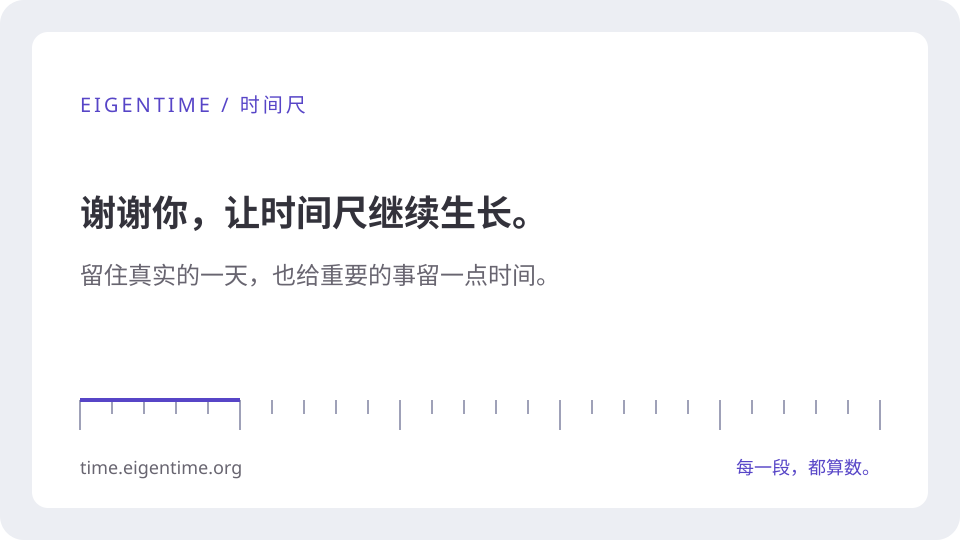

SUPPORT / 自愿支持
支持时间尺
如果时间尺帮你看清了一天，欢迎自愿支持它。这里也准备了一点小小的回礼，让记录旁边的那句话，偶尔替你留个提醒。
所有功能始终免费，无广告、无内购。支持不购买任何功能、优先权或产品方向，也不承诺固定更新或个人服务。
付款在平台完成，币种、金额和是否自动续费以平台结账页为准，请在付款前确认。时间尺不接收付款通知、不保存支付信息。
主题句库与感谢卡 ↓送给愿意同行的你
三套为时间尺写的短句已经内置在应用的「文字轮播」里，点一下就能添加。不用核对订单，也不用留姓名或邮箱；没有支持，也可以取用。
这里的 TXT 与应用里是同一份文件，方便备份或自行改写；英文版在 English 页面。每套 14 句，可轮播两周；不是名人语录或书摘，也不要求连续打卡。
一张感谢卡
留作纪念，或分享给用得上的朋友。卡片不含姓名、付款信息或支持者编号。

保存感谢卡 · SVG 图片
手机若先打开图片，可截图保存；也可从浏览器分享菜单存储到文件。
把句库放进文字轮播
- 打开应用「··· → 阶段格言 · 文字轮播」，选择「文字轮播」。
- 在「主题句库」里点一套旁边的「添加」。句子会追加到文本框，已有的不会重复。
- 检查句子后点「完成」。想替换原句库时，先自行清空文本框再添加。
- 保存后每天按顺序显示一句；同一天保持不变。句库随完整备份保存。
也可以下载上面的 TXT，在同一处点「从文件导入」，结果相同。
打开时间尺这份回馈包含什么约定？
这是当前版本的静态小礼物，下载后可长期保留、自行修改和分享。不设会员、专属功能、公开名单、定期补发或个别定制，也不保证网站永久在线。句库、感谢卡与项目一同开源，遵循项目许可证。 AGPL-3.0-or-later